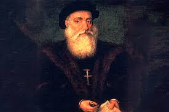
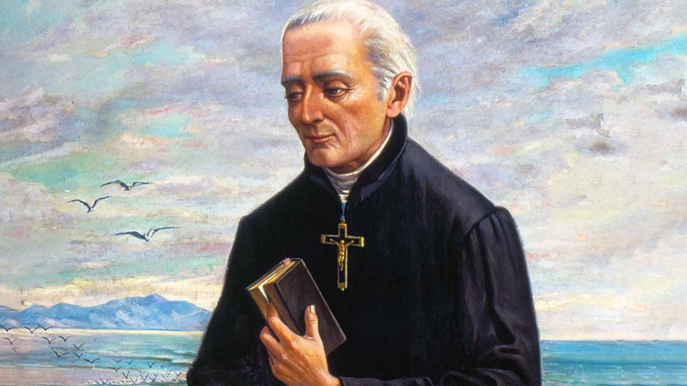
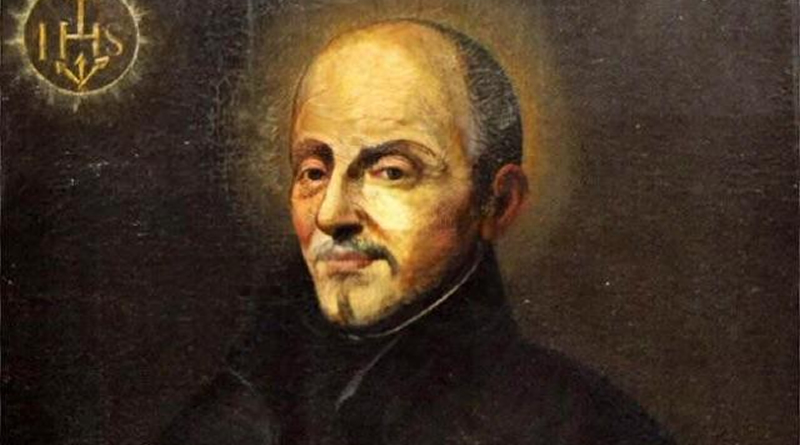

Contexto histórico
O Quinhentismo foi um período histórico e também o primeiro período literário do Brasil, que abrange as manifestações escritas no primeiro século da colonização do país. O nome se refere ao período em que aconteceu, ou seja, em 1500. As produções consistem em basicamente relatos de viagem produzidos pelos portugueses, os quais descrevem as descobertas em território brasileiro, descrevendo a flora, a fauna e o povo que aqui habitava. Aconteceu paralelo ao Classicismo europeu.
Características do Quinhentismo
Os principais autores do período são viajantes e jesuítas, que visavam informar o que viam para as pessoas do outro lado do oceano, com seus textos tendo fortes traços de suas impressões e interpretações do que avistaram aqui, dividindo as obras em literatura de informação e literatura de formação. A obra que mais se destaca do movimento literário é a carta de Pero Vaz de Caminha para o Rei de Portugal (literatura de informação). Segue um trecho da carta:
"Ali veríeis galantes, pintados de preto e vermelho, e quartejados,
assim pelos corpos como pelas pernas, que, certo, assim pareciam bem.
Também andavam entre eles quatro ou cinco mulheres, novas, que assim
nuas, não pareciam mal. Entre elas andava uma, com uma coxa, do joelho
até o quadril e a nádega, toda tingida daquela tintura preta; e todo o
resto da sua cor natural. Outra trazia ambos os joelhos com as curvas
assim tintas, e também os colos dos pés; e suas vergonhas tão nuas, e com
tanta inocência assim descobertas, que não havia nisso desvergonha nenhuma."
Literatura de informação
A literatura de informação consiste nos relatos da dominação das terras brasileiras pelas forças portuguesas, são descritivas informativas, como no relato acima escrito por Pero Vaz de Caminha, o mais importante escritor do gênero. Esses relatos documentam desde a chegada dos colonizadores até os primeiros anos de povoamento.
Principais autores e obras
Pero Vaz de Caminha
Pero Vaz de Caminha era uma pessoa importante em Portugal, onde chegou a ser escrivão e tesoureiro da Casa da Moeda e vereador da cidade do Porto em meados de 1497. No mês de março em 1500, juntou-se à frota de exploração de Pedro Álvares Cabral ocupando o cargo de escrivão-mor. Ao chegar no Brasil, escreveu uma carta ao até então rei de Portugal Rei Dom Manuel I, descrevendo o que haviam encontrado e suas impressões sobre a fauna, a flora e os habitantes, carta essa que é conhecida como "A Carta de Pero Vaz de Caminha", a qual tem um trecho escrito acima.

Literatura de formação ou de catequese
Durante os primeiros anos de ocupação, os portugueses demonizaram os deuses e cultos indígenas, o que culminou na imposição do catolicismo na região. Paralela à literatura de informação, era produzida a literatura de formação ou de catequese, cujo objetivo primário era catequisar e converter indígenas para o catolicismo. As obras eram escritas pelos jesuítas, religiosos que vinham de Portugal para cumprir a missão de catequisação dos nativos, e escreviam poemas, crônicas, cartas e até tratados.
Principais autores e obras
Padre José de Anchieta
O Padre José de Anchieta teve papel fundamental durante o período de colonização, inclusive participando da criação das cidades de Rio de Janeiro e São Paulo, foi um grande poeta e escritor de crônicas, utlizando ambas as línguas portuguesa e tupi.

Segue como exemplo o poema Ao santíssimo sacramento, escrito pelo padre:
Oh que divino manjar
Se nos dá no santo altar
Cada dia.
Filho da Virgem Maria
Que Deus Padre cá mandou
E por nós na cruz passou
Crua morte.
E para que nos conforte
Se deixou no Sacramento
Para dar-nos com aumento
Sua graça.
[...]
Quando na minha alma entrais
E dela fazeis sacrário,
De vós mesmo é relicário
Que vos guarda.
Enquanto a presença tarda
De vosso divino rosto,
O saboroso e doce gosto
Deste pão
Seja minha refeição
E todo o meu apetite,
Seja gracioso convite
De minha alma.
[...]
Pois não vivo sem comer,
Como a vós, em vós vivendo,
Vivo em vós, a vós comendo,
Doce amor.
[...]"
Padre Manuel da Nóbrega
O Padre Manuel da Nóbrega foi um sacerdote jesuíta e também chefe da primeira missão jesuíta nas Américas. Assim como o Padre José de Anchieta, teve papel fundamental na criação das cidades de São Paulo e Rio de Janeiro, além de Salvador.
